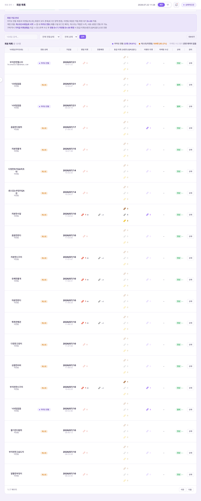
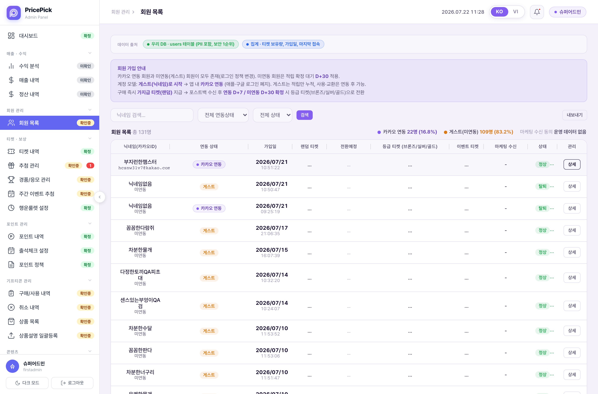

회원 목록 = PricePick을 쓰는 모든 사람 — 게스트(미연동)와 카카오 연동 회원 — 을 한 화면에서 조회하고, 각자가 지금 어떤 티켓을 얼마나 들고 있는지 확인·조정하는 화면. 여기서 가장 중요하게 봐야 할 것은 계정이 두 종류라는 점이다. 닉네임만으로 시작하는 게스트와, 카카오 계정을 연동한 정식 회원은 데이터 보존 방식도, 적립이 확정되는 대기 기간도 다르다. 이 차이를 모르고 화면을 보면 숫자가 왜 이렇게 나뉘어 있는지 이해가 안 된다.Danh sách hội viên = màn hình tra cứu tất cả những ai đang dùng PricePick — cả khách (chưa liên kết) và hội viên đã liên kết Kakao — trên một màn hình, đồng thời kiểm tra·điều chỉnh xem mỗi người hiện đang giữ bao nhiêu vé loại nào. Điều quan trọng nhất cần nắm ở đây là có hai loại tài khoản. Khách (guest) chỉ bắt đầu bằng biệt danh, còn hội viên chính thức đã liên kết tài khoản Kakao — cách lưu trữ dữ liệu và thời gian chờ xác nhận tích lũy của hai loại này khác nhau. Nếu không biết sự khác biệt này thì sẽ không hiểu vì sao các con số trên màn hình lại chia ra như vậy.

상단 통계 라인은 회원 목록 총 131명 · 카카오 연동 22명 (16.8%) · 게스트(미연동) 109명 (83.2%) · 마케팅 수신 동의 운영 데이터 없음 순으로 표시된다. 마케팅 수신 동의가 "운영 데이터 없음"으로 뜨는 것은 오류가 아니라, 데모에 마케팅 동의 값 자체가 채워져 있지 않다는 뜻이다.Dòng thống kê ở trên hiển thị theo thứ tự tổng 131 hội viên · đã liên kết Kakao 22 người (16.8%) · khách (chưa liên kết) 109 người (83.2%) · đồng ý nhận marketing: không có dữ liệu vận hành. Việc hiển thị "không có dữ liệu vận hành" cho đồng ý marketing không phải lỗi, mà nghĩa là bản demo chưa được nhập giá trị đồng ý marketing.
| 요소Thành phần | 의미Ý nghĩa | 바꾸면 생기는 일Điều gì xảy ra khi thay đổi |
|---|---|---|
| 검색·필터 바Thanh tìm kiếm·lọc | 닉네임 검색 + 전체 연동상태 드롭다운 + 전체 상태 드롭다운 + 검색·내보내기 버튼Tìm biệt danh + dropdown toàn bộ trạng thái liên kết + dropdown toàn bộ trạng thái + nút tìm kiếm·xuất dữ liệu | 필터를 좁히면 131명 중 조건에 맞는 사람만 보임 — 나머지가 사라진 게 아니라 숨겨진 것Khi thu hẹp bộ lọc, chỉ hiện người khớp điều kiện trong số 131 người — những người còn lại không biến mất mà chỉ bị ẩn |
| 닉네임(카카오ID)Biệt danh (ID Kakao) | 회원을 식별하는 표시 이름. 카카오 연동 회원은 카카오 계정 정보 일부가 함께 보임Tên hiển thị để nhận diện hội viên. Hội viên đã liên kết Kakao sẽ hiện kèm một phần thông tin tài khoản Kakao | 닉네임은 회원이 앱에서 직접 바꿀 수 있어 이 목록의 이름도 함께 바뀐다Hội viên có thể tự đổi biệt danh trong app nên tên trong danh sách này cũng thay đổi theo |
| 연동 상태Trạng thái liên kết | "카카오 연동" 또는 "게스트" 배지. 이 값이 적립 확정 대기 기간(D+7 vs D+30)을 가른다Badge "Đã liên kết Kakao" hoặc "Khách". Giá trị này quyết định thời gian chờ xác nhận tích lũy (D+7 hay D+30) | 이 배지는 회원이 앱에서 카카오 연동을 완료해야만 바뀐다 — CMS에서 임의로 전환할 수 없음Badge này chỉ đổi khi hội viên tự hoàn tất liên kết Kakao trong app — không thể chuyển tùy ý trong CMS |
| 가입일Ngày đăng ký | 최초 가입(게스트 시작) 일시Ngày giờ đăng ký lần đầu (bắt đầu làm khách) | 정보용 컬럼 — 수정 불가Cột chỉ mang tính thông tin — không thể sửa |
| 랜덤 티켓Vé ngẫu nhiên | 구매 직후 등급이 정해지지 않은 채 임시로 쌓인 가지급 티켓 수Số vé tạm ứng vừa được cấp ngay sau khi mua, chưa xác định hạng | 확정 대기 기간(D+7/D+30)이 지나면 이 숫자가 줄고 등급 티켓으로 옮겨간다Sau thời gian chờ xác nhận (D+7/D+30), số này giảm và chuyển sang vé theo hạng |
| 전환예정Dự kiến chuyển đổi | 랜덤 티켓이 확정되면 어떤 등급으로 몇 장씩 바뀔지 미리 보여주는 미리보기Bản xem trước cho biết vé ngẫu nhiên sẽ chuyển thành hạng nào, bao nhiêu vé khi được xác nhận | 확정 시점 전까지는 예정치일 뿐, 실제 지급이 아니다Trước thời điểm xác nhận, đây chỉ là dự kiến, chưa phải cấp phát thực tế |
| 등급 티켓(브론즈/실버/골드)Vé theo hạng (đồng/bạc/vàng) | 확정을 마치고 실제로 사용·교환 가능한 티켓 보유량. 3개 하위 행으로 표시Số vé đã xác nhận xong và có thể dùng·đổi thực tế. Hiển thị thành 3 dòng con | 게스트는 이 칸이 항상 0 — 연동 전까지는 확정 자체가 안 됨(게스트도 대기 후 확정되지만, 연동해야 사용 가능하므로 실사용은 없음)Với khách, cột này luôn là 0 — bản thân việc xác nhận không diễn ra cho đến khi liên kết (kể cả khách được xác nhận sau thời gian chờ, vẫn phải liên kết mới dùng được nên không có sử dụng thực tế) |
| 이벤트 티켓Vé sự kiện | 출석·룰렛·초대 등으로 얻는 별도 티켓. 등급 티켓과 별개 재화Vé riêng có được từ điểm danh·vòng quay·mời bạn. Là tài nguyên tách biệt với vé theo hạng | 경품 응모에만 쓰인다 — 기프티콘 교환에는 못 씀Chỉ dùng để tham gia bốc thăm quà — không dùng để đổi gift voucher |
| 마케팅 수신Nhận marketing | 전체 동의/선택 동의/전체 거부 표시Hiển thị đồng ý toàn bộ/đồng ý một phần/từ chối toàn bộ | 푸시·알림 발송 대상 산정에 쓰이는 값(발송 기능은 notifications 메뉴에서 별도 처리)Giá trị dùng để tính đối tượng gửi push·thông báo (chức năng gửi được xử lý riêng ở menu notifications) |
| 상태Trạng thái | 정상/정지/탈퇴 등 계정 상태Trạng thái tài khoản: bình thường/tạm khóa/đã rời đi, v.v. | "정지"로 바꾸면 해당 회원은 앱 로그인이 막힌다(운영 제재 수단)Khi đổi thành "tạm khóa", hội viên đó bị chặn đăng nhập app (biện pháp chế tài vận hành) |
| 관리 · 상세 버튼Quản lý · nút Chi tiết | 클릭 시 회원 상세 모달을 연다Bấm vào để mở modal chi tiết hội viên | 모달 안에서만 닉네임 수정·상태 변경·티켓 수동 지급이 가능하다Chỉ trong modal mới có thể sửa biệt danh·đổi trạng thái·cấp vé thủ công |
| 페이지네이션Phân trang | "1 / 7 페이지" — 131명을 7페이지로 분할 표시"1 / 7 trang" — chia 131 người thành 7 trang để hiển thị | 필터를 걸면 전체 페이지 수도 함께 줄어든다Khi áp bộ lọc, tổng số trang cũng giảm theo |

| 요소Thành phần | 의미Ý nghĩa | 바꾸면 생기는 일Điều gì xảy ra khi thay đổi |
|---|---|---|
| 닉네임Biệt danh | 수정 가능한 텍스트 필드(예: "부지런한햄스터")Ô văn bản có thể sửa (ví dụ: "부지런한햄스터") | 저장하는 순간 목록 화면 이름도 즉시 바뀐다Ngay khi lưu, tên ở màn danh sách cũng đổi ngay lập tức |
| 연동 계정Tài khoản liên kết | 카카오 아이콘 + 연동된 이메일(예: hcsnw31v7@kakao.com)Icon Kakao + email đã liên kết (vd: hcsnw31v7@kakao.com) | 읽기 전용 — CMS에서 연동 계정 자체를 바꿀 수 없음(연동 해제=로그아웃 정책, 앱 내 연동 해제 메뉴 없음)Chỉ đọc — CMS không thể tự đổi tài khoản liên kết (chính sách hủy liên kết = đăng xuất, không có menu hủy liên kết trong app) |
| 상태 드롭다운Dropdown trạng thái | 예: "정상". 정지·탈퇴 등으로 변경 가능Vd: "Bình thường". Có thể đổi thành tạm khóa·đã rời đi, v.v. | 저장 시 즉시 반영 — 정지 처리하면 다음 로그인부터 막힘Áp dụng ngay khi lưu — nếu tạm khóa thì bị chặn từ lần đăng nhập tiếp theo |
| 가입 유형Loại đăng ký | 예: "카카오 연동" — 연동 상태와 동일한 정보를 다른 위치에서 보여줌Vd: "Đã liên kết Kakao" — hiển thị lại cùng thông tin trạng thái liên kết ở vị trí khác | 읽기 전용Chỉ đọc |
| 식별 아이디ID định danh | 내부 시스템이 이 회원을 구분하는 긴 UID 문자열Chuỗi UID dài để hệ thống nội bộ phân biệt hội viên này | 읽기 전용. CS 문의 시 이 값으로 회원을 정확히 특정한다Chỉ đọc. Dùng giá trị này để xác định chính xác hội viên khi có yêu cầu CS |
| 티켓 보유 현황Tình trạng vé đang giữ | 랜덤·브론즈·실버·골드·이벤트 티켓 각각의 현재 수량Số lượng hiện tại của từng loại vé: ngẫu nhiên·đồng·bạc·vàng·sự kiện | 읽기 전용 — 캡션에 "랜덤 티켓: 구매 후 연동 D+7 / 미연동 D+30 확정 시 등급 티켓으로 전환. 취소 시 자동 환수"라고 명시Chỉ đọc — chú thích ghi rõ "Vé ngẫu nhiên: sau khi mua, khi xác nhận liên kết D+7 / chưa liên kết D+30 sẽ chuyển thành vé theo hạng. Tự động thu hồi khi hủy đơn" |
| 티켓 수동 지급Cấp vé thủ công | 등급 드롭다운 + 수량 입력 + "지급" 버튼으로 구성된 미니 폼Form nhỏ gồm dropdown hạng + ô nhập số lượng + nút "Cấp" | 지급 이력은 티켓 내역(tickets.html)에 "관리자 지급"으로 기록된다 — 되돌리려면 별도로 "관리자 회수"를 실행해야 함Lịch sử cấp được ghi vào lịch sử vé (tickets.html) dưới tên "Admin cấp" — muốn hoàn tác phải thực hiện riêng "Admin thu hồi" |
참고로 티켓 1장의 환산 가치는 브론즈 100원 · 실버 1,000원 · 골드 2,000원이며, 등급 간 교환은 브론즈 10장 ⇄ 실버 1장, 실버 2장 ⇄ 골드 1장 규칙을 따른다(정책서 “한눈에 보기” 확정). 상세 모달의 "티켓 수동 지급" 폼에서 등급·수량을 입력할 때 이 환산 기준을 참고하면 된다.Tham khảo, giá trị quy đổi của 1 vé là đồng 100đ · bạc 1.000đ · vàng 2.000đ, và quy tắc đổi giữa các hạng là 10 vé đồng ⇄ 1 vé bạc, 2 vé bạc ⇄ 1 vé vàng (đã chốt trong bảng "Nhìn tổng quan" của tài liệu chính sách). Khi nhập hạng·số lượng ở form "Cấp vé thủ công" trong modal chi tiết, có thể tham khảo chuẩn quy đổi này.
| 상황Tình huống | 운영자가 하는 일Việc Vận hành viên làm | 사용자에게 생기는 일Điều xảy ra với người dùng |
|---|---|---|
| "티켓이 사라졌다" 문의Khiếu nại "vé của tôi biến mất" 게스트가 기기 변경·재설치 후 문의Khách hỏi sau khi đổi máy·cài lại app | 닉네임·식별 아이디로 회원 상세 조회 → 연동 계정이 비어 있으면(=미연동) 데이터가 기기 저장분이었음을 확인Tra chi tiết hội viên bằng biệt danh·ID định danh → nếu tài khoản liên kết trống (= chưa liên kết) thì xác nhận dữ liệu đã lưu ở thiết bị | 미연동 상태였다면Nếu ở trạng thái chưa liên kết thì 복구 불가 안내thông báo không thể khôi phục — 향후 재발 방지 위해 연동 권유khuyến khích liên kết để tránh lặp lại |
| 등급 티켓 오지급 정정Sửa lỗi cấp nhầm vé theo hạng CS 대응·이벤트 보상 등Xử lý CS·thưởng sự kiện, v.v. | 상세 모달 "티켓 수동 지급"에서 등급·수량 입력 후 지급(회수는 반대 방향, tickets.html의 “관리자 회수”로 처리)Nhập hạng·số lượng ở "Cấp vé thủ công" trong modal chi tiết rồi cấp (thu hồi thì làm theo chiều ngược, xử lý bằng "Admin thu hồi" ở tickets.html) | 해당 회원의Hội viên đó 보유 티켓이 즉시 반영được cập nhật vé ngay lập tức — 지급 이력은 티켓 내역에 "관리자 지급"으로 남음lịch sử cấp được lưu lại trong lịch sử vé dưới tên "Admin cấp" |
| 부정 이용 의심 계정 정지Tạm khóa tài khoản nghi gian lận 비정상 적립·어뷰징 정황 확인 시Khi phát hiện dấu hiệu tích lũy bất thường·gian lận | 상세 모달 상태 드롭다운을 "정지"로 변경 후 저장Đổi dropdown trạng thái trong modal chi tiết thành "Tạm khóa" rồi lưu | 해당 회원은Hội viên đó 다음 로그인부터 앱 진입 차단bị chặn vào app từ lần đăng nhập tiếp theo |
| "언제 등급 티켓 되나요" 문의Khiếu nại "khi nào vé thành hạng" 확정 대기 기간(D+7/D+30) 관련 문의Hỏi về thời gian chờ xác nhận (D+7/D+30) | 가입일 + 연동 상태로 D+7/D+30 기산일 계산 후 "전환예정" 컬럼값으로 안내Tính ngày bắt đầu D+7/D+30 dựa vào ngày đăng ký + trạng thái liên kết rồi hướng dẫn theo giá trị cột "Dự kiến chuyển đổi" | 만료가 아니라 대기 중이라는 점을Cần giải thích rõ đây là 명확히 안내đang chờ chứ không phải hết hạn |
데모 CMS는 조회·필터·검색과 상세 모달의 닉네임 수정·상태 변경·티켓 수동 지급까지만 동작한다. 실제 회원 데이터를 서버가 처리하는 것(가입·연동·확정 대기 계산 등)은 정식 앱·백엔드가 하는 일이고, 이 데모 CMS와는 연결돼 있지 않다. 즉 지금 화면은 "운영자가 무엇을 보고, 어떤 항목을 조정할 수 있는지"를 확정하는 기획 기준이다.CMS demo chỉ hoạt động đến mức tra cứu·lọc·tìm kiếm và trong modal chi tiết là sửa biệt danh·đổi trạng thái·cấp vé thủ công. Việc server xử lý dữ liệu hội viên thực tế (đăng ký·liên kết·tính thời gian chờ xác nhận, v.v.) là việc của app·backend chính thức, không kết nối với CMS demo này. Nói cách khác, màn hình hiện tại là chuẩn thiết kế xác định "Vận hành viên xem được gì, điều chỉnh được mục nào".
티켓의 발행·전환·회수 원장 전체는 티켓 내역(tickets.html)에서 별도로 관리된다 — 이 화면의 "티켓 수동 지급"으로 만든 기록도 결국 그 원장의 한 줄로 남는다.Toàn bộ sổ cái phát hành·chuyển đổi·thu hồi vé được quản lý riêng ở Lịch sử vé (tickets.html) — bản ghi tạo ra từ "Cấp vé thủ công" ở màn này cuối cùng cũng lưu thành một dòng trong sổ cái đó.